Knight
Sturdy. Shield Bash stuns and can interrupt heavy attacks.
- Shield Bash
- 130% dmg, stuns 2s 6s
- Bulwark
- +armor for 4s, Perfect banks 2 blocks 12s

a bloodline roguelike
The Hollow King stole our throne. The First Heir climbed to take it back and never returned. Every heir since has followed him. Each one who falls makes the Manor stronger.
Hollow Spire is in a closed test on Google Play.
Join the Google group first, then install the game from Google Play. Use the same Google account for both.


the climb
Every door is a choice. Every tenth floor holds a gate-keeper. When an heir falls, the souls they gathered return to the Manor, the gold feeds the Armory, and the next heir climbs stronger. The summit stands on floor 50 at first. Each ascension makes the Spire harder. From Ascension 4 the summit rises too, to floor 200 at Ascension 10, where the Hollow King waits.
Each generation draws new heirs with their own traits. Whatever one dies holding can pass down as an heirloom.
Relics drop as a hand of sealed cards. Break the seals, take one, the others burn. Of the 104 relics, 21 change a rule rather than a number.
Your heir swings on their own, and two dice roll with every swing. A high roll hits harder, and a roll at your crit number or above is a crit. Cast an ability at the peak of a swing and it lands Perfect.
From Ascension 4, every gate-keeper stands behind a Barrier that turns away 25% to 50% of your damage. A ring fills around the Break button; tap Break when the ring reaches 100% to wear the Barrier down.
The Spire does not bury its dead. It employs them.the Grimoire, on Skeletons
on the phone

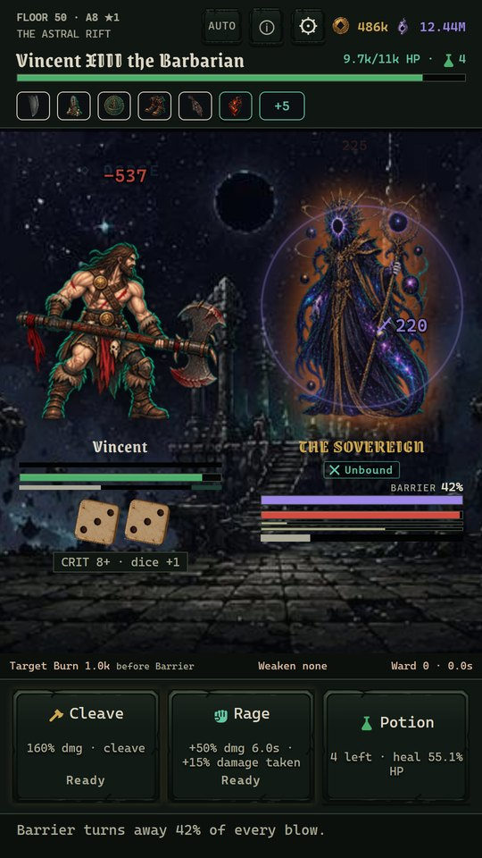
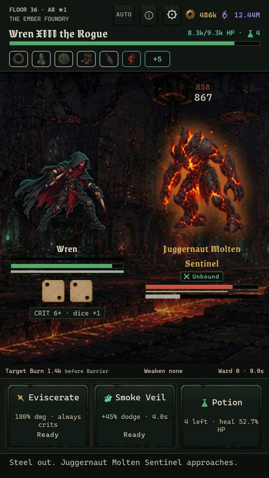
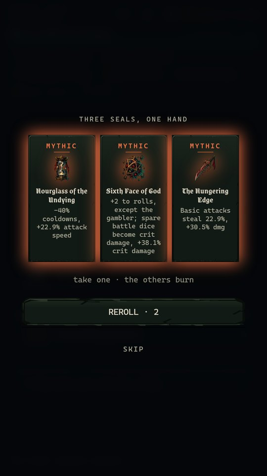
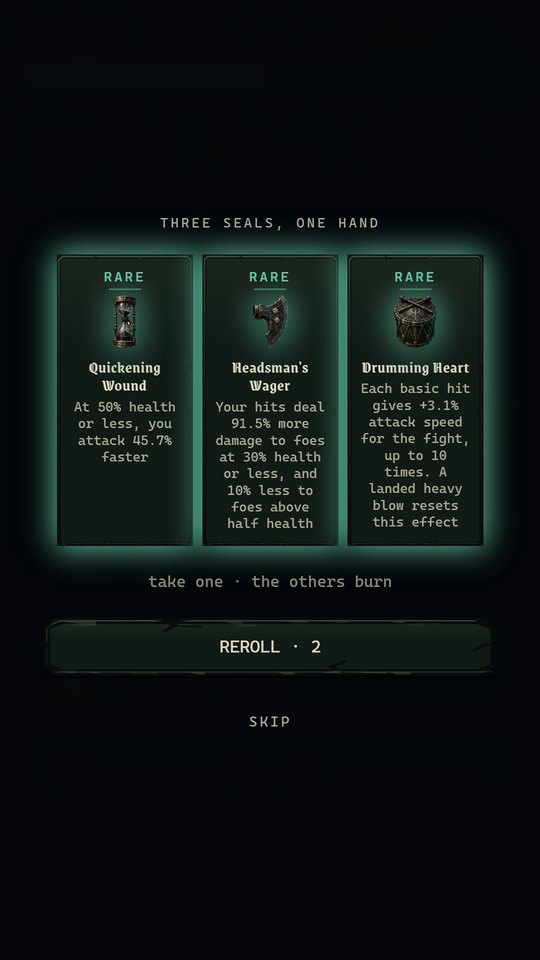
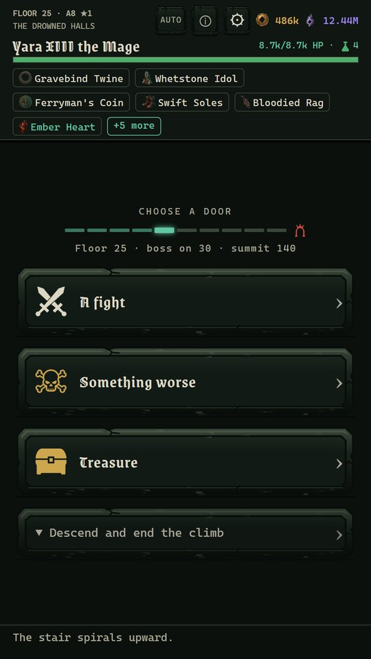

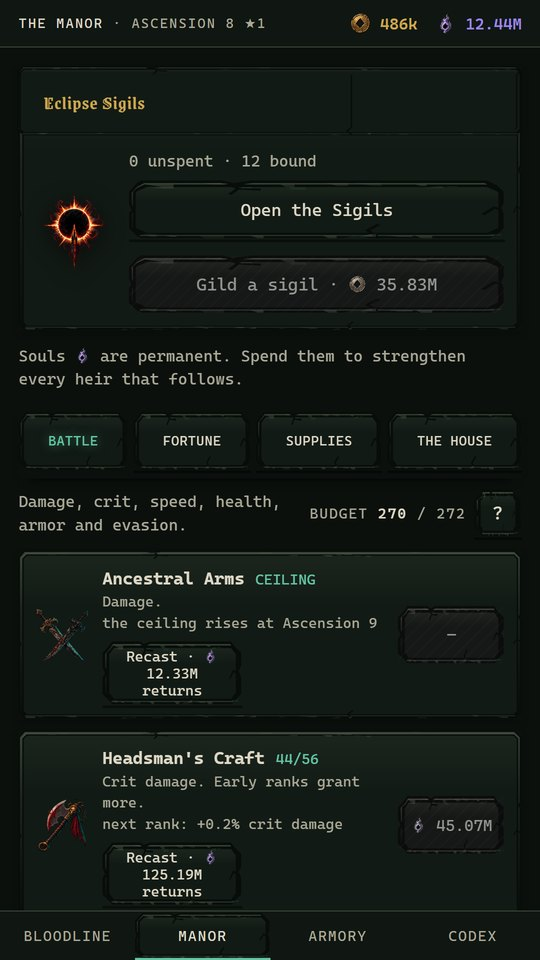
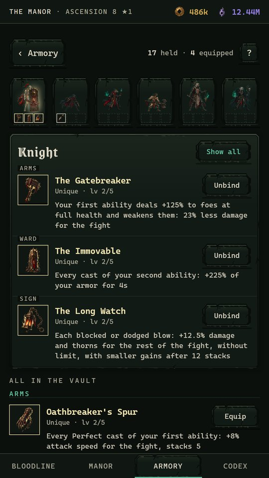
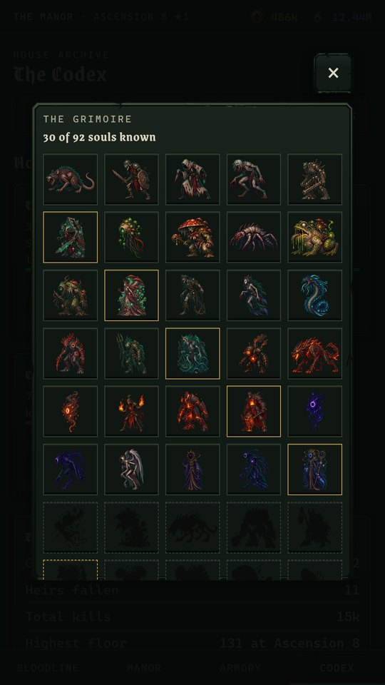
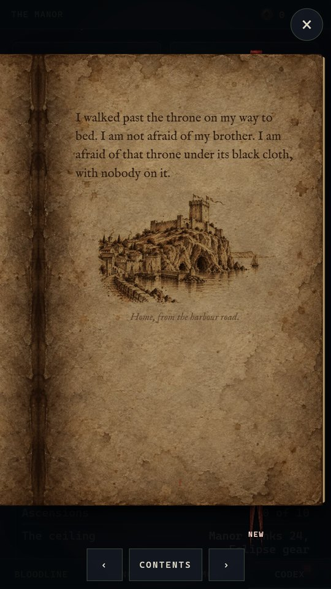
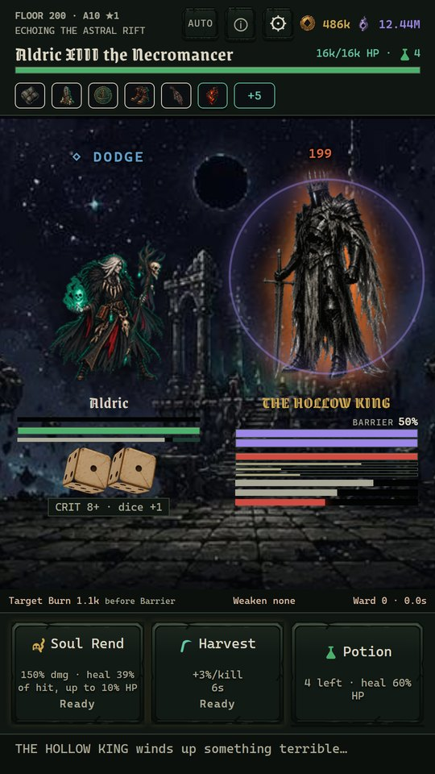
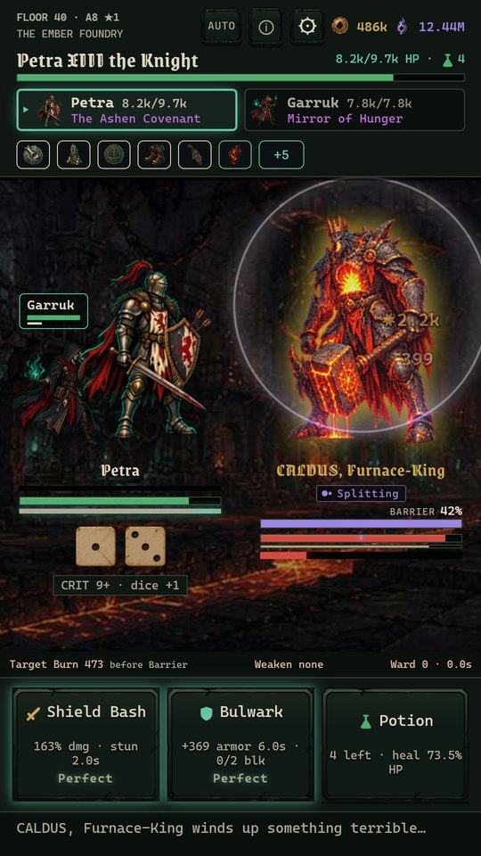
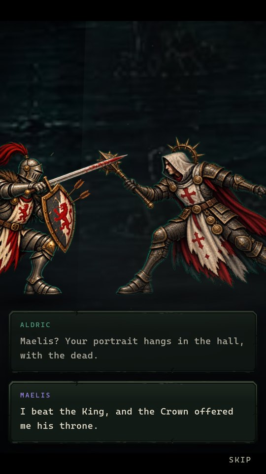
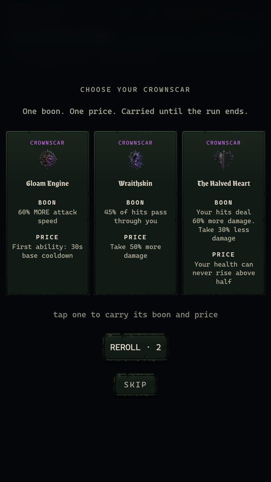
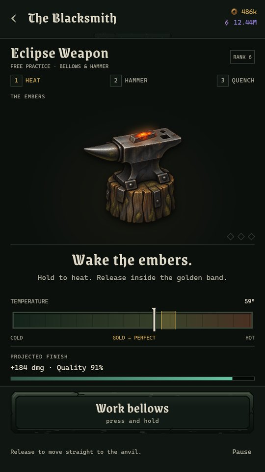
the six lines
One class is open from the first climb. The Manor opens the rest, and each brings two abilities that bargains can reshape and temper along the way.
Sturdy. Shield Bash stuns and can interrupt heavy attacks.
Fast, deadly, fragile.

Slow swings, huge spells.
All violence, no plan.

Endures anything.

Grows stronger with every kill this run.
between climbs
The Manor belongs to the whole line: what one heir buys there, every heir after keeps.
Souls buy its ranks. A rank is kept by every heir who comes after.
Gold buys the line's gear: a weapon, armor and a charm, one tier at a time. Every heir carries all three.
A felled gate-keeper can leave a vestige. The Vault keeps every vestige you find, and each heir wears one Arms, one Ward and one Sign on every climb.
Choose a piece, then practice the work for free before spending gold. Heat, three blows, quench: each in gold is Perfect. Five Perfect marks make a Masterwork.
eclipse sigils
Each ascension leaves an Eclipse Sigil. Spend a Sigil to bind a boon of your choice to the bloodline. Three of the boons are new ways to climb.
Before a climb, invite a visitor: one of the house's dead lends your heir an ability from another class.
Opens at Ascension 5.
A climb of keepers only, one after another, with a heal between them.
Opens at Prestige 1.
Two heirs climb at once and fight together; tap one to lead. Each reward goes to one of them. If one heir falls, the relics that heir carried are lost.
Opens at Ascension 8.
floor 200 and after
At Ascension 10 the Hollow King waits on floor 200. Beat him, then choose what your heir does next. Climb Beyond goes on past floor 200. Return to the Manor ends the climb with the victory recorded. Take the Crown ends the climb too, and begins a Prestige.
In a Prestige the line starts again at Ascension 0. It loses its Manor, Armory, vestiges, gold, souls and heirs, and keeps its Prestige stars, the Codex and its history. Each Prestige star gives foes 15% more health and 10% more attack, and makes every climb pay 25% more gold and souls. Every Prestige starts with 3 Eclipse Sigils for each Prestige star.
From Prestige 1, each climb opens with a hand of three Crownscars. An heir may take one: a boon, with a price, for the whole climb.
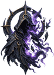
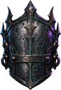
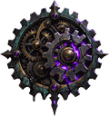
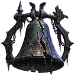
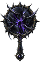
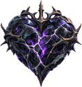
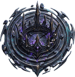
Through every Prestige the line remembers the heirs who beat the Hollow King. These are its crowned heirs. In a later Prestige, one of them can meet your heir at the start of a climb, and the first meeting plays as a short painted comic. Take the crowned heir along as an ally, and the ally takes half of that climb's gold and souls. Or duel the crowned heir: a win brings a vestige and an Eclipse Sigil, and a loss kills your heir.
the grimoire
Five zones of ten floors, each with its own foes, an elite that winds up heavy blows, and a gate-keeper at the tenth floor. The lines are the Grimoire's own.


On odd ascensions the first fifty floors are other halls: The Ossuary Gardens, The Mirror Marsh, The Chandler's Halls, The Starving Church, The Clockwork Abyss. Above floor 50 the Spire rises through The Hollow Crown, The Star Larder, The Blood Archive, The Bell Foundries, The Roofless Throne. Past floor 100 the halls repeat, and every foe returns stronger as an Echoing foe. The foes of all ten halls are left for you to find.
the reliquary
Every relic in the pool, as the game describes it today. Descriptions are read from the game itself, so this page changes when the game does.


before the climb
From the first ascension, swear hardships at the Manor gate. Each oath raises what the Spire pays.